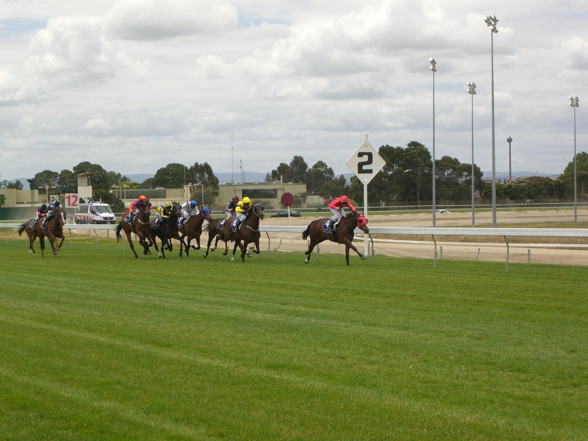

Monroe Walk mantiene el invicto y gana el Shuka Sho en su debut en el Grupo I
La potra Monroe Walk ganó este domingo el Shuka Sho de Kyoto, la tercera y última joya de la Triple Corona japonesa de potras, en su primera visita al Grupo I. Partía con un favoritismo abrumador —se pagó 30/100— y no falló: cruzó la meta por delante de Garavogue, que daba 35/1, y de Dream Core, con 74/10.

El resultado deja a la ganadora con el palmarés intacto, sin derrotas desde su debut. El Shuka Sho se disputa sobre 2.000 metros en la pista de hierba del hipódromo de Kyoto y reúne cada otoño a las mejores tres años de la temporada en Japón.
Garavogue, en el segundo puesto, firmó la gran sorpresa del día en apuestas. Dream Core, en el tercero, confirmó su línea de carreras preparatorias con un podio en una carrera de Grupo I para potras.
La ganadora encadena así los tres clásicos del año destinados a su categoría y entra en el otoño nipón con los grandes abiertos a su siguiente paso, en una temporada en la que Japón ha vuelto a condensar el calendario de potras en pocas semanas de carrera.
Por Martín Larrañeta